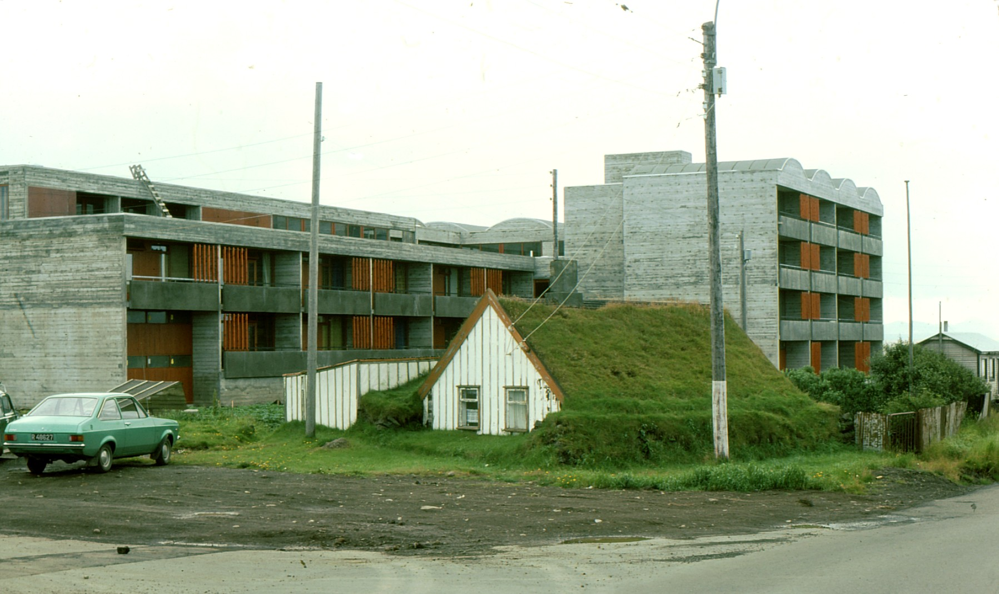

Um torfbæina
Umfjöllun um torfbæi í Reykjavík og víðar, hvenær þeir voru reistir og rifnir og hvar þeir stóðu, ásamt ljósmyndum og nánari upplýsingum.
Hér er safnað saman myndum og fróðleik um torfbæi víða um land. Sérstaklega er þó fjallað um torfbæi sem voru í Reykjavík. Þessa bæi er búið að rífa fyrir löngu með fáum undantekningum.
Markmið vefsins er að miðla efni til þeirra sem hafa áhuga á þessum mikilvæga hluta af byggingarsögu landsins, menningu og minjum.

Umfjöllun um torfbæi í Reykjavík og víðar, hvenær þeir voru reistir og rifnir og hvar þeir stóðu, ásamt ljósmyndum og nánari upplýsingum.
Skoða má staðsetningu torfbæjanna á kortum ásamt frekari upplýsingum þegar smellt er á einstaka bæi.
Tilgangur vefsins er að safna saman upplýsingum um torfbæi í Reykjavík og annars staðar á landinu.